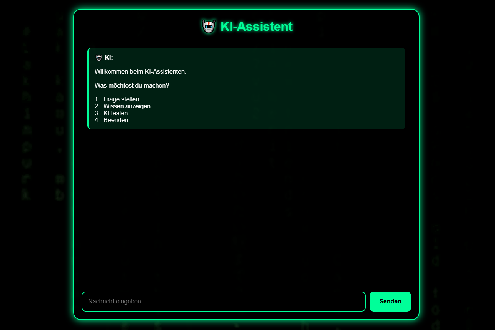
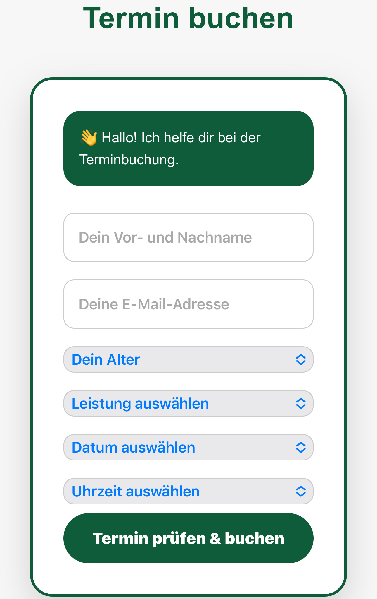

Abdul Ghani Alchaiteh
Angehender Fachinformatiker für Anwendungsentwicklung
Ich interessiere mich für Softwareentwicklung, Webentwicklung, Automatisierung und moderne Technologien.
Aktuell suche ich eine Ausbildung im IT-Bereich, um meine Kenntnisse professionell weiterzuentwickeln und praktische Erfahrungen zu sammeln.

Über mich
Ich bin 22 Jahre alt und lebe in Chemnitz. Nach meinem Realschulabschluss habe ich begonnen, mich intensiv mit IT und Programmierung zu beschäftigen. Durch selbstständiges Lernen und eigene Projekte habe ich mir Kenntnisse in der Webentwicklung und Softwareentwicklung aufgebaut. Besonders interessieren mich Anwendungen, Automatisierung, künstliche Intelligenz und digitale Lösungen. Mein Ziel ist es, eine Ausbildung zum Fachinformatiker für Anwendungsentwicklung zu beginnen und mich langfristig im Bereich Softwareentwicklung weiterzuentwickeln.
Meine Fähigkeiten
Programmierung & Entwicklung
- HTML
- CSS
- JavaScript Grundlagen
- Python Grundlagen
- Flask Grundlagen
- SQLite Datenbanken
- Git & GitHub
- Responsive Webdesign
- REST API Grundlagen
- Debugging und Fehleranalyse
Technisches Interesse
- Softwareentwicklung
- Webentwicklung
- Automatisierung
- Künstliche Intelligenz
- IT-Systeme
- Netzwerke Grundlagen
Meine Projekte

KI-Assistent – Webanwendung
Entwicklung eines eigenen KI-Assistenten mit Python und Flask. Das Projekt wurde von einem lokalen Python-Programm zu einer öffentlich erreichbaren Webanwendung entwickelt. Umgesetzt wurden unter anderem:
- Frontend mit HTML, CSS und JavaScript
- Backend mit Python und Flask
- Wissensdatenbank
- API-Kommunikation zwischen Frontend und Backend
- GitHub Versionsverwaltung
- Deployment über Render
Technologien: Python, Flask, HTML, CSS, JavaScript, GitHub, Render

Online-Buchungssystem
Entwicklung einer Webanwendung für digitale Terminverwaltung. Das Projekt beinhaltet Benutzeroberflächen, Datenverwaltung und organisatorische Funktionen. Dabei beschäftige ich mich mit:
- Weboberflächen
- Datenverarbeitung
- Benutzerinteraktionen
- Strukturierung von Anwendungen
Technologien: HTML, CSS, JavaScript, Python, Datenbanken
Webseitenentwicklung
Entwicklung eigener Webseitenprojekte und moderner Webauftritte für kleinere Projekte. Dabei beschäftige ich mich mit:
- Modernem Webdesign
- Strukturierung von Webseiten
- Benutzerfreundlichkeit
- Responsiver Darstellung für Smartphones und Computer
Technologien: HTML, CSS und JavaScript
Praktische Erfahrung
Durch meine eigenen IT-Projekte sammle ich praktische Erfahrungen in der Entwicklung von Webseiten und Anwendungen. Dazu gehören:
- Planung und Umsetzung eigener Projekte
- Entwicklung moderner Webseiten
- Arbeiten mit GitHub und Versionsverwaltung
- Selbstständiges Lernen neuer Technologien
- Problemlösung und Weiterentwicklung von Anwendungen
Lebenslauf
Hier können Sie meinen aktuellen Lebenslauf als PDF herunterladen.
Lebenslauf herunterladenKontakt
Abdul Ghani Alchaiteh
Chemnitz, Deutschland
Verfügbar für eine Ausbildung
zum Fachinformatiker
📧 E-Mail:
abdoalchaiteh01@icloud.com
📱 Telefon:
+49 176 45702117
💻 GitHub:
github.com/AGA-01
🔗 LinkedIn:
Abdul Ghani Alchaiteh